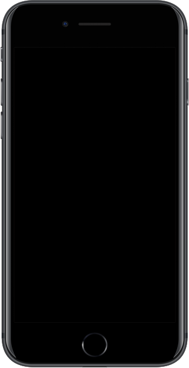
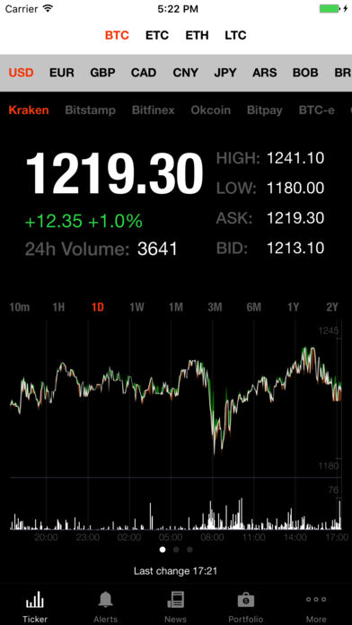

Twitter
Twitter er en App jeg er svært takknemligfor. Her kan hvem som helst med en konto poste små meldinger på 140 tegn om alt og ingenting. En av mine favorittpersoner å følge er @realDonaldTrump, USAs president. Dette usminka Tweets rett fra levra. #MAGA
Jeg anbefaler selvfølgelig alle å følge @realDonalTrump på Twitter. Om du allerde ikke har fått oppleve denne store Twitter-profilen skal jeg gi deg en smake bit her.
Hent tweets fra Trump